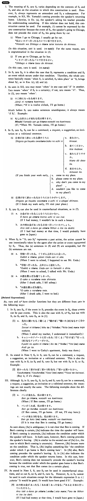

←
DoJG
→
たら
(B. 452)
Example sentences
(ks).
山田さんが来
たら
私は帰る・帰ります。
When/If Mr. Yamada comes, I'll go home.
(a).
先生に聞い
たら
直ぐ分かった。
When I asked my teacher, I understood right away.
(b).
私は大学を出
たら
小学校の先生になります。
I'll be an elementary school teacher after graduating from college.
(c).
私は忙しいですから、面白かっ
たら
読みますが、面白くなかっ
たら
読みませんよ。
I'm busy, so I'll read it if it's interesting, but I won't if it's not interesting.
(d).
嫌いだっ
たら
残して下さい。
If you don't like it, please leave it.
(e).
英語だっ
たら
分かると思います。
I think I'll understand it if it's English.
Formation
{V/Adjective (い/な)N+copula} informal past
ら
話した
ら
If/when someone talks/talked
高かった
ら
If something is/were expensive
静かだった
ら
If something is/were quiet
先生だった
ら
If someone is/were a teacher
